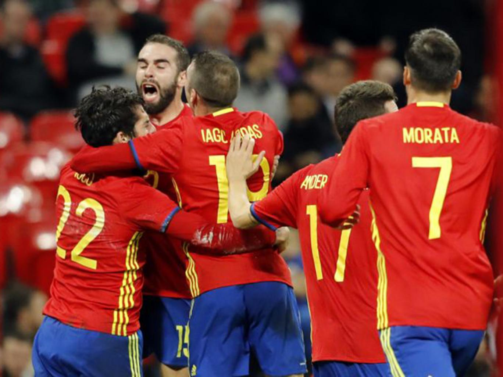

Monday Night Football in Mexico: Texans-Raiders face off in return
The Texans and Raiders face off in Week 11 of Monday Night Football in the NFL's return to Mexico. It will be the second regular-season game to take place at Mexico City's Estadio Azteca.
The NFL has a storied history in Mexico:
The first NFL regular-season game played outside of the United States was on Oct. 2, 2005, when the Cardinals won 31-14 over the 49ers at Estadio Azteca in front of 103,467 people.
The league's two most-attended games were played at Estadio Azteca, both in the preseason. On Aug. 15, 1994, the Cowboys and Oilers played in front of 112,376 people, and on Aug. 17, 1998, 106,424 fans watched the Cowboys and Patriots play.
Approximately 16.88 million households make up Mexico's TV viewing population, about 15 percent the size of the U.S. TV market and roughly equivalent to the combined size of the top three markets in this country -- New York, Los Angeles and Chicago.
Week 11's best fantasy football free-agent finds
Prior to the season, I was among those who believed that the soundest strategy leading into your draft if you owned one of the top three picks was to go with a wide receiver (my ranks: Antonio Brown, Julio Jones and Odell Beckham Jr. in that order). Why? Because running backs are -- generally speaking -- less predictable for fantasy purposes.
However, with 10 regular-season Sundays in the books and just three more until we reach the ESPN Fantasy postseason, many of you who have already punched your playoff ticket -- or come close -- have likely done so because of a workhorse running back. Those aren't readily available on the waiver wire, but today's column will include a list of handcuffs to the top-scoring backs who should be owned in all leagues (excluding those who are already owned in more than 50 percent of leagues). Beyond that, we'll have our usual assortment of selections
Note: All players on this list are owned in less than 50 percent of leagues on ESPN.com.
England vs Spain match report: Isco's last-minute goal spoils Gareth Southgate's perfect audition
 Spain's players celebrate Isco's late equaliser at Wembley AP.Nothing is easy, nothing is smooth, when it comes to the England national team. Gareth Southgate had that fact burned into him 20 years ago but this match, and especially the last five minutes of it, formed another helpful reminder.
This was very nearly the perfect evening for Southgate, in the fourth and final match of his audition for the full-time job. Normal time was nearly done and England were 2-0 up against Spain, hoping to see out what would have been a brilliant win, deserved and controlled, a win that would have shown that England can now beat almost anyone.
Read more here.